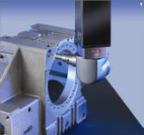
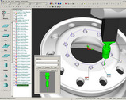
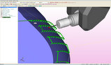
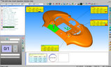

HEXAGON METROLOGY Türkiye,
Bursa merkez binasýndaki,
PC-DMIS ölçüm yazýlýmý
kullaným ve
ileri seviye eðitimlerine davetlisiniz...
Mühendisler, teknikerler, teknisyenler, Kalite Kontrol-Ölçü Kontol bölümlerinde çalýþan operatörler, kendisini ölçme konusunda eksik hissedenler, 3 boyutlu ölçüme ilgi duyanlar...
Cihaz baþýnda uygulamalý yapýlacak olan eðitimlerimize davetlisiniz.
Kontenjanýmýz sýnýrlýdýr, kayýt önceliði için bir an önce bizimle irtibata geçiniz... |
 |
- Eðitimlerde öðlen yemekleri ve ikramlar firmamýz tarafýndan saðlanacaktýr.
- Katýlýmcýlara eðitim notlarý, kalem ve not defteri verilecektir.
- Bütün katýlýmcýlara Katýlým Sertifikasý verilecektir.
- Eðitim sonunda yapýlacak teorik ve uygulamalý sýnavda baþarýlý olanlara ise Kullanýcý Sertifikasý verilecektir.
PC-DMIS PRO (temel ölçüm fonksiyonlarýný içerir)
- Cihazýn açýlýþý ve koruyucu bakým
- Uç tanýmlama, yýldýz uç kalibrasyonu
- Temel geometrilerin ölçümü
- Referans sistemi Oluþturma
- Otomatik program yapma ve çalýþtýrma
- Program düzenleme
- Ölçü sorgulama ve raporlama
|
 |
PC-DMIS CAD
- CAD Data çaðýrmak
- Iterative referanslama
- Datalar üzerinde deðiþiklik yapmak
- CAD desteði ile iþ parçasý üzerinde temel geometrilerin ölçümü
- CAD destekli raporlama ve analizler oluþturma
- Simetri program oluþturmak
- CAD destekli veya CADsiz ölçülen özelliklerin CAD formatlarýna dönüþtürülmesi
|
 |
PC-DMIS CAD++
- CAD destekli veya CADsiz parçalarýn taranmasý
- CAD destekli tarama ile parça analizleri
- Elde edilen taramalardan geometri oluþturulmasý
- Taramalarýn CAD formatlarýna dönüþtürülmesi
|
 |
PC-DMIS GEAR
- Düz ve helis diþlilerin kontrolü yazýlýmý
2009 eðitim takvimi:
9 Þubat
PC-DMIS PRO |
10 Þubat
PC-DMIS PRO |
11 Þubat
PC-DMIS PRO |
12 Þubat
PC-DMIS GEAR |
13 Þubat
PC-DMIS GEAR |
16 Þubat
PC-DMIS CAD |
17 Þubat
PC-DMIS CAD |
18 Þubat
PC-DMIS CAD |
19 Þubat
PC-DMIS CAD++ |
20 Þubat
PC-DMIS CAD++ |
23 Þubat
PC-DMIS PRO |
24 Þubat
PC-DMIS PRO |
25 Þubat
PC-DMIS PRO |
26 Þubat
PC-DMIS GEAR |
27 Þubat
PC-DMIS GEAR |
2 Mart
PC-DMIS CAD |
3 Mart
PC-DMIS CAD |
4 Mart
PC-DMIS CAD |
5 Mart
PC-DMIS CAD++ |
6 Mart
PC-DMIS CAD++ |
Baþvuru ve bilgi için:
elif.alkus@hexagonmetrology.com
Tel: (312) 417 14 14
www.HexagonMetrology.com.tr
|